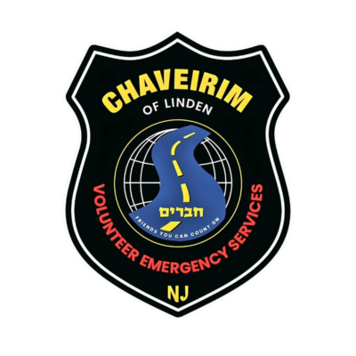

Chaverim of Union County is a volunteer-based organization providing emergency roadside assistance and community support to residents across Union, Essex & Hudson County, New Jersey.
From weather emergencies to everyday crises, our volunteers are ready to assist whenever you need us — 24 hours a day.
During natural disasters, Chaverim comes prepared for the challenge by providing generators, helping evacuate in flood locations, and assisting with critical lighting, heating and cooling needs.
Inclement weather can cause travelers to become stranded due to flat tires, mud, snow, drained batteries or empty gas tanks. Chaverim members are experts at helping in such predicaments.
First on the scene in many cases during a crisis or when tragedy strikes, Chaverim advocates and helps families in need of comfort or assistance.
Chaverim confirms ownership and then opens locked doors for those left on the outside.
Chaverim is happy to help find and recover valuables that were lost, left behind or are beyond reach.
Chaverim is able to assist with pest removal and relocation.
Including Lift Assist — Chaverim assists disabled individuals to better maneuver around their homes and community.
If you need help, just call us. We'll do everything we can to assist.
Your donation or volunteer hours directly support our ability to respond when community members need us most.
Having trouble viewing the form?
Open Form in New Tab ↗